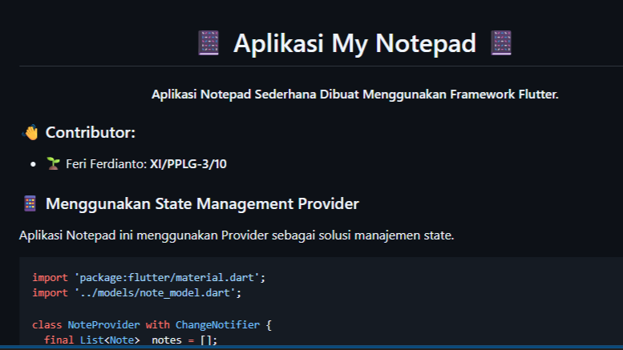
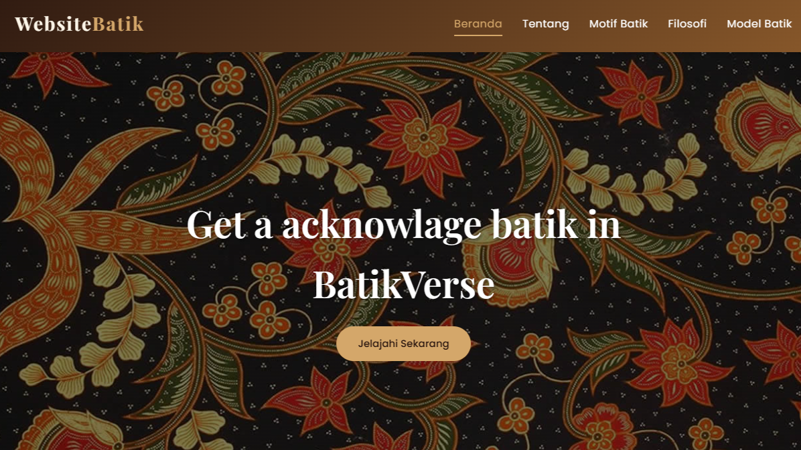

Featured Projects
Beberapa project yang pernah saya buat dan juga sebagai bagian dari proses belajar.

Note App
SelesaiMembuat aplikasi catatan sederhana menggunakan Flutter dan Dart, dan projek ini juga dari tugas sekolah

Tentang Batik
SelesaiTentang berbagai macam batik yang ada di Indonesia, dibuat menggunakan HTML, CSS, dan JavaScript.


Fanpage
SelesaiProject ini adalah fanpage sederhana untuk Hanni, salah satu anggota dari grup K-Pop NewJeans. Tujuan dari project ini adalah hanya untuk menunjukan rasa tertarik terhadap artis tersebut.

Faca Recognition
SelesaiProject ini adalah memanfaatkan teknologi pengenalan wajah menggunakan Python dan OpenCV. Saya membuatnya untuk belajar tentang pengolahan citra dan machine learning.

Personal Resource Hub
Dalam PengembanganProjek ini adalah mengelola link dan memiliki Database dan Backend pertama saya buat. Dan untuk fitur ada Auth, CRUD, dan Email Verification dan banyak lagi.